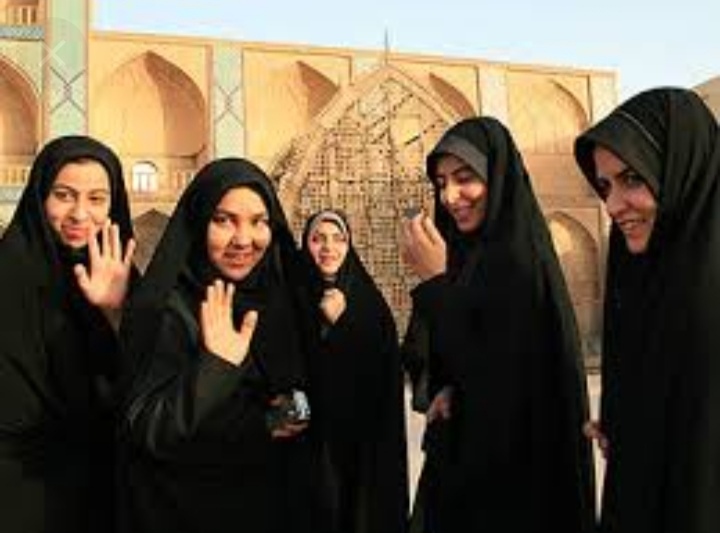
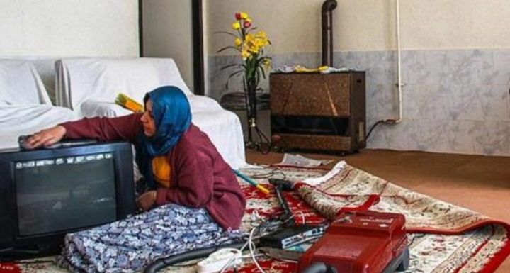
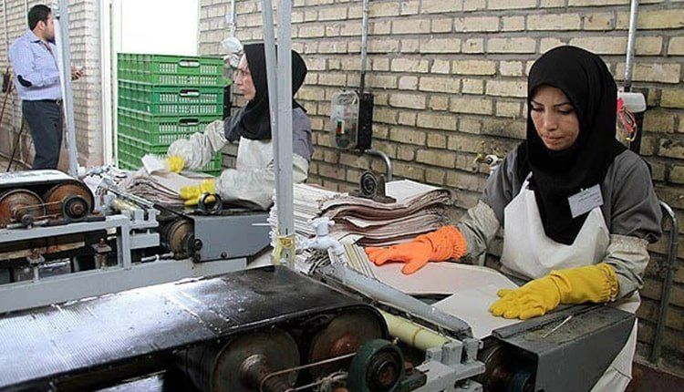
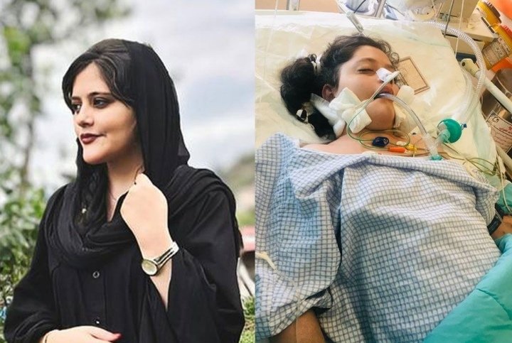
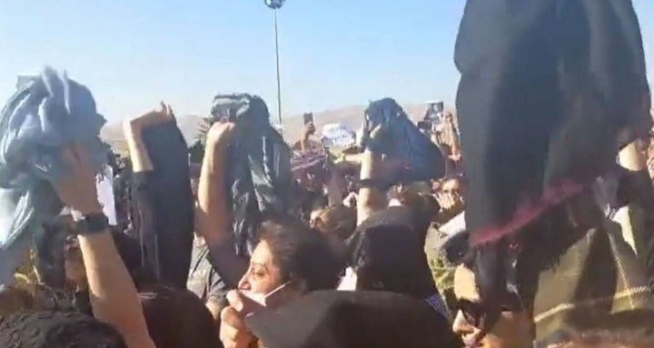

Women in Iran have been jailed for "singing in public, or publishing their work on social media". According to Amnesty International women in Iran face "discrimination in law and practice in relation to marriage and divorce, inheritance, child custody, nationality and international travel".

In Iran woman are treated like object who belongs to their father or to their husband they need permission from them to do the silliest things. Moreover they are forced to wear hijab and clothes that cover their hall bodies, they feel like they are stuck in a cage, but they can't do anything for the fear of getting killed or jailed

Iran women must do all the chores and raise the children alone, they can't leave the house without their husband permission
work

Husbands have the right to prevent wives from working in particular occupations and some positions require the husband's written consent. As of 2006, women's labor-force participation rates was at 12.6% in rural areas with a national rate of 12.5% whereas the rate for men is 66.1%.
The Incedent
On 16 September 2022, a 22-year-old Iranian woman named Mahsa Amini, also known as Jina Amini, died in a hospital in Tehran, Iran, under suspicious circumstances. The Guidance Patrol, the religious morality police of Iran's government, arrested Amini for not wearing the hijab in accordance with government standards

The cause of her death was unknown but people suspect that the police officers who arrested her for not wearing a hijab belated her which lead her to have a heart attack.

When this happened a lot of women in Iran waked up for the reality and decided that it was the time for them to become free, they removed their hijab during their protests and demanded for their rights